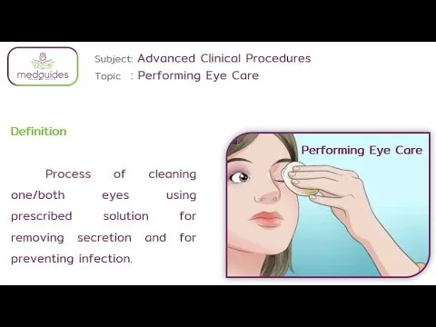
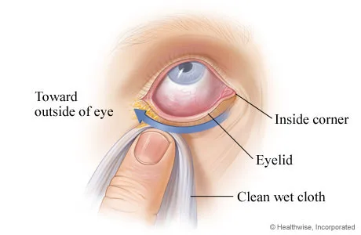
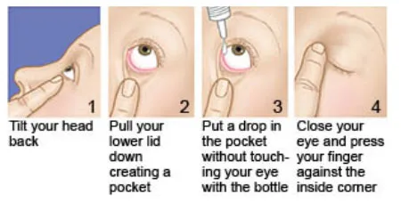
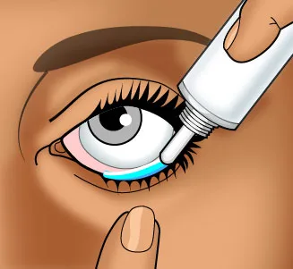
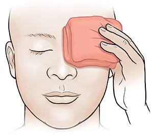
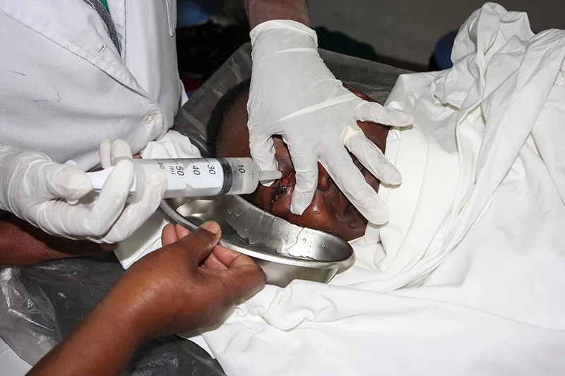
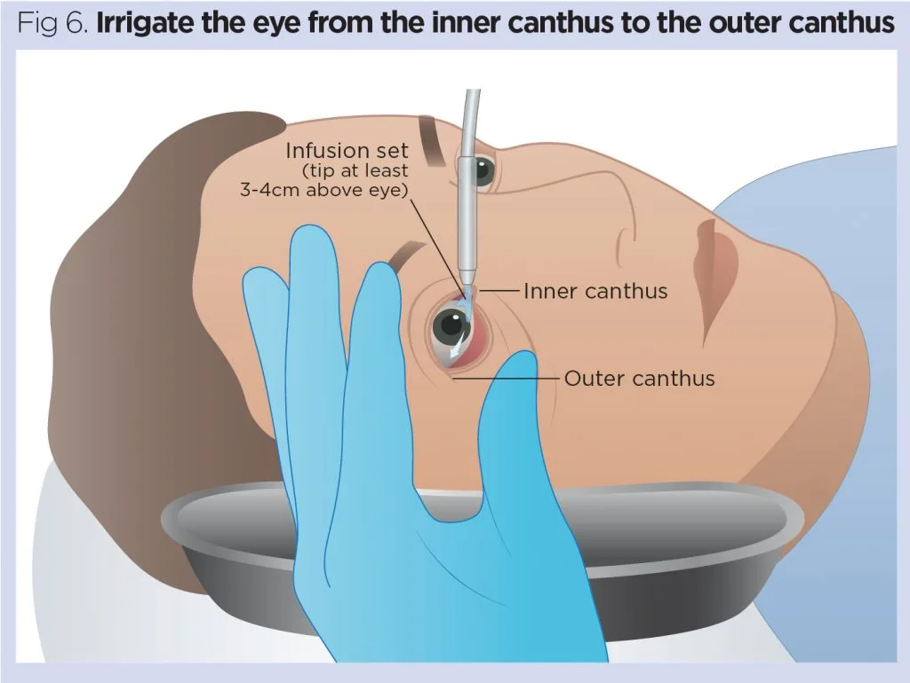

Expanded Nursing Uganda Explanation
Care of Patients eyes(Cleaning of the eye) should be understood beyond a short definition. Link the concept to patient history, focused assessment, common risks, nursing priorities, documentation and evaluation of outcomes.
Contents — 20 sections (tap to expand)
01 CARE OF THE PATIENT’S EYES.
Care of the patient’s eyes includes a range of procedures and practices aimed at maintaining the cleanliness, comfort, and health of the eyes .
It Involves:
- Cleaning of the Eye : This includes removing debris, discharge, and crusting from the eyelids and eyelashes. It’s done gently using sterile wipes or cotton balls moistened with warm water.
- Instillation of Eye Drops/Ointment : This is done to deliver medication directly to the eye, treating various conditions like infection, inflammation, dryness, or glaucoma.
- Cold and Warm Compresses : These are used to reduce inflammation, calm irritation, or promote relaxation. Cold compresses are applied for injuries or swelling, while warm compresses are beneficial for dry eye or clogged tear ducts.
- Eye Irrigation : This involves flushing the eye with a sterile solution to remove foreign objects, irritants, or excessive discharge.
02 Indications of Cleaning the eye
- Patients with Eye Discharge: This can be a sign of infection, inflammation, or irritation. Cleaning the eye, instilling appropriate drops, and sometimes irrigation can help manage the discharge and promote healing.
- Postoperative Care for Patients Following a Cataract Operation : This includes gentle cleaning of the eye, instillation of prescribed eye drops, and monitoring for signs of infection or complications.
- Eye Care for the Unconscious Patient : This is crucial for preventing infections and maintaining eye health. It includes cleaning the eye, keeping the eyelids closed, and ensuring the eyes are protected from injury.
- To Be Performed Prior to Instilling Eye Drops or Ointment : Cleaning the eye beforehand helps ensure that the medication is delivered effectively and avoids contamination.
- Patients with Dry Eye Syndrome: Eye care practices can help manage symptoms by promoting tear production, lubricating the eye, and protecting the cornea.
- Patients with Eye Allergies : Cleaning the eye and instilling antihistamine drops can help manage the symptoms of itching, redness, and watery eyes.
- Patients with Foreign Body in the Eye : Eye irrigation with a sterile solution is essential to remove the foreign object and prevent damage to the cornea.
03 Aims/Purposes of Eye Care:
- To prevent and treat infections : Cleaning and disinfecting the eye area helps reduce the risk of infections.
- To alleviate symptoms and discomfort : Procedures like cold compressions, warm compresses, and eye irrigation can provide relief from pain, itching, and dryness.
- To promote healing and recovery : Appropriate cleaning and medication can help facilitate healing after eye surgery or trauma.
- To maintain optimal eye health : Regular eye care can help prevent eye diseases and preserve vision.
04 Cleaning of the Eye
Objectives
- Identify the requirements for cleaning the eyes.
- Prepare the requirements for cleaning the eyes.
- Demonstrate the ability to clean the eyes.
Requirement
Tray containing:
- Gallipot of cotton balls
- Receiver
- Clean/disposable gloves
- Mackintosh and towel
- Plastic apron
- Gallipot of normal saline 0.9% or cooled boiled water
At the bedside:
- Hand washing equipment
- Screen
Procedure
- Steps Action Rationale
- 1. Observe general rules. Promotes adherence to standards.
- 2. Put the patient in a sitting up position. To prevent the flow of solution to the healthy eye.
- 3. Place protective mackintosh and towel in place. To prevent soiling/wetting the patient’s clothes.
- 4. Wash and dry hands and put on gloves. To prevent cross infection.
- 5. Stand at the right-hand side of the patient.
- 6. Dip the swabs/cotton balls in the solution and bathe the eye in the following sequence: – Start from the healthy eye – Swab from the nasal to the temporal aspect, using the swab once and discard. – Use the dry swabs to dry the eye – Do the same for the other eye – Repeat the swabbing until the eye is cleared of all discharge. Prevents contamination from entering the other eye. Prevent the spread of infection.
- 7. Dry excess fluid with a dry swab. Prevent the spread of infection.
- 8. Thank and leave the patient comfortable. Promotes a sense of well-being.
- 9. Clear away. Maintain the cleanliness of the environment.
- 10. Document the procedure.
05 INSTILLATION OF EYE DROPS/ OINTMENT.
Instillation Of Eye Drops/ Ointment is the process of application of medication into the patients’ eyes.
Objectives
- Identify the requirements for instilling eye drops/ointment.
- Prepare the requirements for instilling eye drops/ointment.
- Instill the eye drops/ointment to the eyes.
06 Indications:
For Eye Drops:
- To treat infections: Antibiotic eye drops are commonly used to combat bacterial infections like conjunctivitis (pink eye).
- To keep eyes moist: Artificial tears or normal saline drops are used to lubricate the eye and relieve dryness, often prescribed after cataract surgery.
- To anaesthetize the eye : Anaesthetic drops numb the eye surface, used for procedures like cataract surgery or foreign body removal.
- To dilate the pupil : Mydriatic drops widen the pupil, facilitating eye exams or helping treat certain eye conditions.
- To reduce inflammation: Steroid eye drops are used to reduce inflammation in the eye, often prescribed after eye injury or surgery.
- To lower intraocular pressure: Glaucoma medications are often administered as eye drops to control eye pressure and prevent further damage.
For Eye Ointment:
- To protect the vision of neonates : Prophylactic antibiotic ointment is routinely applied to newborns’ eyes to prevent infections.
- To treat infections : Antibiotic ointments can be used to treat bacterial eye infections, often preferred for overnight treatment due to their longer-lasting effect.
- To lubricate and soothe dry eyes : Ointments can provide a longer-lasting lubricating effect than drops, especially helpful for severe dryness.
- To treat certain eye allergies : Steroid ointments can be used to reduce allergic inflammation.
Requirements
- Patient’s medication chart.
Tray :
- Prescribed eye drops/eye ointment
- Gallipot of cotton balls
- Receiver
- Gloves
- Eye pad in a sterile bowl
- Strapping
At the Bedside:
- Hand washing equipment
- Screen
07 Procedure for eye drop
- Steps Action Rationale
- 1. Refer to general rules. Promotes adherence to standards.
- 2. Check the prescription. Ensures correct administration of medicine.
- 3. The patient may be seated or lying down for this procedure. Provides easy access to the eye for instillation.
- 4. Wash hands and put on gloves. Prevents the spread of microorganisms.
- 5. Clean the eyes as before. Prevents entrance of microorganisms to the lacrimal duct.
- 6. Place a folded swab on the lower lid up to the lash margin. Absorbs medication that escapes from the eye.
- 7. Instilling eye drops: Gently pull down the eyelid of the affected eye. Exposes lower conjunctival sac.
- 8. Request the patient to look up; hold the dropper close to the eye and drop the medicine according to the dose into the lower conjunctival sac. To reduce stimulation of the blink reflex.
- 9. Release the lower eyelid after the eye drops are installed.
- 10. Request the patient to gently close the eye.
- 11. Apply gentle pressure over the inner Canthus. To prevent eye drops from falling over the inner Canthus to prevent systemic effects from the medicine.
- 12 Administering eye ointment: – Gently pull down the lid To expose the inner surface of the lid and conjunctival sac.
- 13 Squeeze a small amount (1.25cm) of ointment along the exposed sac from in outwards. Promotes comfort and prevents trauma to the eye.
- 14 Instruct the patient to close the eyes. The warmth helps to liquefy the ointment Prevents contamination and entrance of micro-organism into the eye.
- 15 Instruct the patient to roll the eyeball Patient should keep the eye closed for a few minutes. Allows even distribution of medication over the eye.
- 16 Thank and leave the patient comfortable. Ensures patient’s comfort.
- 17 Clear away. Ensures a clean environment.
- 18 Record treatment given on the chart. Continuity of care and follow up.
General Principles – Application of Eye Ointment
- Ointment may be prescribed in addition to drops . If both are prescribed, drops should be instilled first, followed by ointment after a 3-minute interval.
- Ointment may be prescribed for structures other than the eye . This could include wounds on the lids, face, or eye socket.
- Ointment may be prescribed for use after the first dressing . This might not happen for up to a week in some oculoplastic surgery cases.
- If requested, visual acuity should be recorded before ointment is applied . This is because ointment clouds vision. Any existing ointment excess should be removed before taking the measurement.
- A 5-mm strip of ointment should be applied to the inner edge of the lower fornix of the appropriate eye.
- The patient should close his eye and remove excess ointment with a swab.
- The patient should be advised that the ointment is likely to cause blurring of vision due to its viscous nature.
- In the case of wounds on the lids, face, or eye socket, ointment should be squeezed directly onto the wound . It can be dispersed using a moistened swab. If the ophthalmic surgeon requests it, the wound or scar should be massaged using the ointment.
08 Procedure of Instillation of Eye Ointment
- Steps Action Rationale
- 1. Wash hands and prepare trolley and equipment in accordance with ANTT (Aseptic Non Touch Technique) principles. Promotes adherence to standards.
- 2. Check the patient identification band against the eye-drop medication chart. Ensures correct patient identification and medication administration.
- 3. Prepare the patient for the procedure and obtain consent, giving an explanation of the procedure including any side-effects of the medication. Informed consent and patient understanding of the procedure.
- 4. Assess the patient as before, including ensuring that the drops are not contra-indicated. Ensures the medication is safe and appropriate for the patient.
- 5. The patient should be seated. Provides easy access to the eye for instillation.
- 6. Wash hands or use alcogel. Prevents the spread of microorganisms.
- 7. Prepare equipment and place it in the tray, identifying key parts to be protected during the procedure; in this case, the tips of bottles. Maintains aseptic technique.
- 8. Check drops/ointment against the prescription. Ensures correct medication is administered.
- 9. Check the correct strength (%) of the drops against prescription. Ensures correct dosage.
- 10. Check drops/ointment have not expired. Check clarity of drops, i.e., the fluid in the bottle/minim must be clear and not discoloured. Ensures medication is safe and effective.
- 11. Check packaging/bottle seal is intact when first used. Ensures sterility and safety of the medication.
- 13. Ensure that the drops are instilled into the correct eye. Ensures correct administration site.
- 15. Check no contact lens in situ unless advised to the contrary by the doctor. Prevents interference with medication absorption and eye health.
- 16. Remove gloves, clean hands with alcohol gel and reapply non-sterile gloves. Prevents contamination and maintains hygiene.
- 17. Open packaging, ensuring key parts remain protected. NB: You may need to open additional packaging if the eye needs cleaning prior to drop instillation, in which case you should proceed to eye cleaning first. Maintains aseptic technique.
- 18. Instruct the patient to slightly tilt the head back and ask the patient to look up. NB: Before using any bottle of eye drops, shake the bottle first. Facilitates easy access to the eye and proper medication distribution.
- 19. Instill only one drop into the lower fornix towards the outer canthus or squeeze 5 mm of ointment along the lower fornix towards the outer canthus. NB: Ointment must only be applied after prescribed eye drops. Ensures correct medication application.
- 20. Ask the patient to gently close his eyes, counting slowly to 60. This helps to minimize systemic absorption. Promotes proper absorption and effectiveness of the medication.
- 21. Wipe away any excess drops/ointment, taking care not to wick away drops from the eye. Maintains patient comfort and ensures proper dosage remains in the eye.
- 22. If further drops are prescribed, wait an interval of 3 minutes before carrying out the procedure. Apply alcogel to hands before instilling the next eye drop. Prevents contamination and ensures effectiveness of multiple medications.
- 23. Make the patient comfortable; patients usually appreciate being given a tissue to dab their cheeks. Ensures patient comfort and cleanliness.
- 24. Dispose of clinical waste, cleanse hands, and then clean the tray. Maintains a clean and safe environment.
- 25. Cleanse hands and document the procedure in the case notes and/or drop chart. Ensures proper record-keeping and patient safety.
09 WARM EYE COMPRESS.
A warm eye compress involves applying a warm, moist cloth or compress to the eye area.
- Soothe and relax the eye muscles : The warmth helps to relax the eye muscles, which can be helpful for reducing eye strain and fatigue.
- Increase blood flow to the area : The warmth dilates blood vessels, increasing blood flow to the eye area, which can promote healing and reduce inflammation.
- Loosen eye secretions : Warmth can help loosen mucus and other secretions in the eye, making them easier to remove.
10 Indications for Warm Eye Compresses
- Pain Relief : Warm compresses can help reduce discomfort and pain in the eye area.
- Reduce Inflammation: The warmth helps to decrease inflammation and swelling in the eye.
- Improve Medication Absorption : Warm compresses can enhance the absorption of eye drops or ointments.
- Promote Drainage : Warmth helps to loosen and drain secretions, which can be beneficial for superficial infections.
- Dry eye : Warmth can help to stimulate tear production and lubricate the eye surface.
- Stye (hordeolum) : A stye is a painful red bump on the eyelid caused by a bacterial infection. Warm compresses can help to bring the stye to a head and promote drainage.
- Blepharitis : This is a common eye condition that causes inflammation of the eyelids. Warm compresses can help to loosen debris and reduce inflammation.
- Conjunctivitis (Pink eye): This is an infection of the conjunctiva, the thin transparent membrane that lines the inside of the eyelid and covers the white part of the eye. Warm compresses can help to soothe inflammation and promote drainage.
- Eye strain: Warm compresses can help to relax eye muscles and relieve eye strain caused by prolonged computer use or reading.
- Meibomian Gland Dysfunction (MGD): This condition involves a blockage of the oil glands in the eyelids, causing dry eye and other symptoms. Warm compresses can help to loosen and drain the oil glands.
Requirements
- Tray Bedside
- Bowl with warm water Screen
- Sterile water or normal saline Hand washing apparatus
- Mackintosh cape and towel/dressing mackintosh
- Sterile bowl
- Cotton swabs
- Receiver
Procedure
- Steps Action Rationale
- 1 Identify the eye to be treated. Ensure the correct eye to prevent error.
- 2 Follow the general rules. Promote adherence to standards.
- 3 The patient may be seated or lying down for this procedure. To ensure comfort for the patient.
- 4 Place the bowl with solution in a bowl of warm water. Cold application is very uncomfortable for the patient.
- 5 Wash dry hands and put on gloves. To prevent the chance of cross infection.
- 6 Place the swab in the warm solution (37°-41°C). To improve circulation and relieve pain.
- 7 Squeeze out the excess solution. To reduce the chance of scalding the patient and wetting patient’s clothes.
- 8 Instruct the patient to close the eye. Gently apply the swab on top of the affected eye. To promote patient’s safety and prevent skin damage.
- 9 Change the compress every 2 minutes for the prescribed length of time. To maintain a constant temperature for the duration of therapy.
- 10 Use a dry swab to clean and dry the eyes. Promote patient’s comfort.
- 11 If required apply eye drops/ointment. To prevent infection.
- 12 Thank and leave the patient comfortable. Promotes patient’s well-being.
11 COLD EYE COMPRESS
Cold compress is placing of a cold compress/pack over the affected area or eye to relieve discomfort.
12 Indications of Cold compress
- Reduce inflammation : Cold compresses constrict blood vessels, reducing inflammation and swelling.
- Relieve pain : The coldness helps numb the affected area, reducing pain and discomfort.
- Reduce bleeding: Cold compresses can help stop minor bleeding by constricting blood vessels.
- Control bruising : Applying cold compresses immediately after an injury can help reduce bruising by minimizing blood pooling.
- To reduce swelling or bleeding: Cold compresses can help reduce swelling and bleeding in the eye area by constricting blood vessels.
- To ease periorbital discomfort : Cold compresses can help ease pain and discomfort around the eye area.
- To relieve itching : The coolness of the compress can help reduce itching in the eye area.
Requirements
Tray
- Ice cubes/chips
- Solution: sterile water or normal saline solution
- Mackintosh and towel/Dressing mackintosh
- Strapping
- Cotton swabs
- Clean gloves
At the bedside
- Screen
- Hand washing apparatus
13 Procedure of cold compress
- Steps Action Rationale
- 1 Follow the general rules of nursing procedure. Prevent solution from over the nose and into the eye.
- 2 Identify the eye to be treated. To prevent errors.
- 3 The patient should lie down for this procedure. To prevent the solution from wetting the patient’s clothes.
- 4 Position the mackintosh and towel to protect the patient’s clothes. To prevent wetting the patient’s clothes.
- 5 Place the swab in the bowl of ice chips (18-27°C). To make it easy to apply and provide comfort.
- 6 Wash dry hands and put on gloves. To prevent infection.
- 7 Place the moist swab over the affected closed eye. The swab helps to conduct the cold from the ice pack.
- 8 After 15-20 minutes, remove the cold compress. To prevent skin change this can occur from vasoconstriction.
- 9 Use a dry swab to clean and dry the patient’s face. To ensure comfort.
- 10 If required apply eye drops/ointment. To prevent/treat infection.
- 11 Thank and leave the patient comfortable. To ensure comfort.
- 12 Clear away and document procedure. To ensure proper records are kept.
14 Eye Irrigation
Eye irrigation involves flushing the eye with a sterile solution to remove foreign bodies, irritants, or discharge. This process helps cleanse the eye, reduce inflammation, and improve visual clarity.
Eye irrigation is the washing of the conjunctiva sack with a stream of fluid(water) . The gentle flow of the irrigation solution washes away the offending substance from the eye. The solution is typically sterile and isotonic to minimize irritation.
15 Purpose/Aims of Eye Irrigation:
- To remove foreign bodies from the eye : This includes dust, dirt, small particles, or insects that may have entered the eye.
- To remove chemicals which have been accidentally splashed into the eye(s): This includes chemicals, smoke, fumes, or allergens that may cause irritation.
- To washout discharge : This includes mucus, pus, or other secretions that may accumulate in the eye.
- Reduce inflammation: The flushing action can help reduce inflammation and swelling.
- Improve visual clarity : Removal of foreign objects or discharge can improve vision.
- Before administration of medication : Irrigation can help prepare the eye for medication application.
- In preparation for eye operations : Irrigation can help cleanse the eye before surgery.
16 Indications for Eye Irrigation:
- Foreign body sensation : If a patient feels something in their eye, such as a speck of dust or a small insect.
- Chemical or irritant exposure: If the eye has come into contact with a chemical or irritant.
- Discharge or secretions : If there is excessive discharge or secretions from the eye.
- Eye infections : In some cases, eye irrigation can help remove infectious material and reduce inflammation in certain eye infections.
Requirements
Tray-sterile
- Irrigating solution-Normal saline at 37°C or plain boiled cooled water(sterile).
- Sterile gloves, patient’s towel
- Lid retractor
- Litmus paper
- Undine or any small container with a pouring spout e.g. feeding cup, bulb syringe or Sterile irrigation set
- Eye pad/waterproof pad
- Gallipot of cotton balls or facial tissues
- 2 receivers, mackintosh cape and towel/dressing mackintosh
- Boric acid 2 to 4 %
- Gallipot of cotton
At the bedside
- Wash hand equipment
- Screen
Procedure
- Steps Action Rationale
- 1 Follow the general rules for all nursing procedures. Promotes adherence to standards.
- 2 Have the patient sit or lie down with the head tilted toward the side of the affected eye. Protect the patient and the bed with a dressing mackintosh or waterproof pad and a towel. Gravity helps the flow of solution away from the unaffected eye and from the inner canthus of the affected eye toward the outer canthus.
- 3 Put on gloves. Clean the eye as before. –
- 4 Place the curved part of the receiver at the cheek on the side of the affected eye to receive the irrigating solution. If the patient is sitting up, request the patient to hold the receiver. Cavity aids the flow of solution.
- 5 Expose the lower conjunctival sac and hold the upper lid open with the non-dominant hand. To avoid injury to the conjunctival sac and prevent reflex blinking.
- 6 Hold the irrigator about 2.5 cm from the eye. Direct the flow of the solution from the inner to the outer canthus along the conjunctival sac. This minimizes the risk of injury to the cornea and prevents the spread of infection from the eye to the lacrimal sac, lacrimal duct, and the nose.
- 7 Irrigate until the solution is clear or all the solution has been used. Use only sufficient force gently to remove secretion from the conjunctiva without touching any part of the irrigating equipment. To prevent injury to the tissues of the eye, as well as the conjunctiva, and promote comfort for the patient.
- 8 Tell the patient to close the eye and move the eye periodically. Helps to move the secretion from the upper to the lower conjunctival sac.
- 9 Dry the area after irrigation with cotton balls. Offer the towel to the patient if the face and neck are wet. To provide comfort.
- 10 Remove gloves and wash your hands. –
- 11 Make the patient comfortable. –
- 12 Document the procedure or findings. –
- 13 Clear away. –
Points to remember
- For chemical burns, irrigate each eye for at least 15 minutes with normal saline solution to dilute and wash out the harsh chemicals.
- If the patient cannot identify the specific chemical, use litmus paper to determine if the chemical is acidic or alkaline or to be sure the eye has been irrigated adequately.
- When irrigating both eyes, ask the patient to tilt his head towards the side being irrigated to avoid contamination.
- An irrigation fluid may be pre-packed in a disposable set for use or a sterile 50ml syringe may be used.
17 Nursing Uganda Clinical Lens
Use Care of Patients eyes(Cleaning of the eye) as a practical nursing topic, not only a memorized definition. Turn the topic into practical nursing knowledge: meaning, assessment, care priorities, teaching and evaluation.
- What to understand first: define care of patients eyes(cleaning of the eye), identify the normal or expected pattern, then explain what changes when the patient is unwell.
- Why it matters in care: the nurse must recognize risk early, explain findings clearly, document accurately and know when to escalate.
- How to revise it: connect each point to assessment, nursing diagnosis or care problem, intervention, rationale and evaluation.
18 Assessment Guide
- Key definitions, patient history, focused observations and risk factors.
- Findings that are normal, abnormal or urgent.
- Resources, referral needs and documentation requirements.
19 Nursing Priorities, Rationales and Outcomes
- Protect safety, comfort, dignity and infection prevention.
- Provide clear care, education and escalation when needed.
- Evaluate response and record what changed.
The rationale for these priorities is patient safety: nursing actions should prevent deterioration, reduce discomfort, support recovery and create clear evidence for the next caregiver.
- Expected outcome: The topic is understood in a way that supports safe nursing judgement and revision.
20 Patient Teaching and Revision Check
- Explain care of patients eyes(cleaning of the eye) in simple language the patient or caregiver can repeat back.
- Teach warning signs, medicine or follow-up instructions, hygiene or lifestyle points where relevant.
- For exams, prepare a short answer using: definition, causes or risk factors, signs, assessment, management, complications and prevention.
- For ward practice, document baseline findings, actions taken, patient response and the plan for review.
Illustrations and Diagrams (10)








2 more diagrams available — open the lesson for full illustrations.
Related Video Lectures
Watch nursing lecture videos on YouTube for this topic. Opens in a new tab.
Watch on YouTubeExternal link: YouTube may use its own cookies and terms. Nursing Uganda is not affiliated with YouTube.